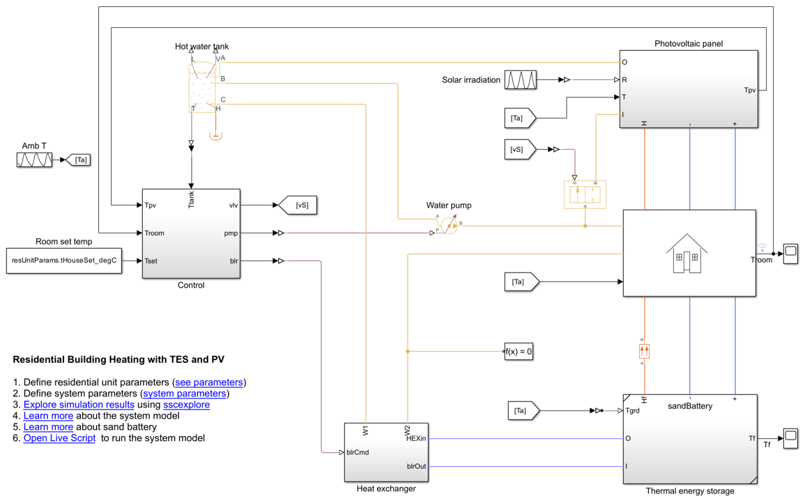
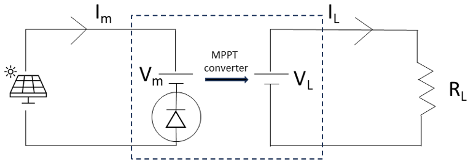
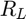
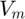
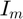
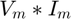
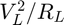
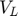
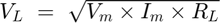

Residential Building Heating with TES and PV
Contents
Model Overview
The residential heating model comprises a rooftop photovoltaic (PV) panel for charging the thermal battery, a thermal energy storage for storing renewable energy, a hot water tank for storing hot water, a heat exchanger (HEX) for heating the water, a pump for supplying hot water to the house, and an air blower for taking out the stored heat from the thermal battery.
To increase the efficiency of the system PV panels, the model recovers the heat by circulating the water through the channels below the PV panels. The Control subsystem controls the water pump and air blower pressure to achieve the set temperature of the hot water tank. The subsystem also operates the flow control valve. The flow control valve allows the water to flow towards the PV panels that are hotter than the tank temperature.

Model Subsystems
Photovoltaic Panel Subsystem
The Photovoltaic panel subsystem models the solar battery that converts the sunlight into electricity. The subsystem uses a Solar Cell block that allows you to choose a pre-parameterized PV component.
MPPT Converter Subsystem
The PV panel produces a power as a function of the load resistance that connects to the panel. To maximize the power that the PV panels produce when they connect to the heating coil network of a given resistance, you require an MPPT converter. This picture shows equivalent circuit of MPPT.

The MPPT Converter subsystem receives two inputs:
- The net heating coil resistance that connects to the PV panel 
- The Voltage  at which the PV panel produces the maximum power.
PV panel suppliers provide the value of in the product datasheet. To maximize the PV power, the MPPT sets the voltage across the panel to . If the current from the PV panel is , then the power that the PV panel produces is equal to .
The heater coil dissipates a power equal to .
To calculate the MPPT terminal voltage, the MPPT Converter subsystem equates the two powers and solve for :
.
Residential Unit Subsystem
The Residential Unit subsystem comprises an electrical resistor to model the household power consumption and a thermal network to model the temperature variation of the rooms. Hot water radiators heat the rooms when the outside atmosphere temperature drops below the room set point temperature. The roof of the rooms thermally connects to the PV panel. The floor of the rooms thermally connects to the TES by using a Conductive Heat Transfer block.
Thermal Energy Storage Subsystem
To model the sand battery, the Thermal energy storage subsystem uses a Sand TES custom block. To learn more about the custom block, see Sand Battery